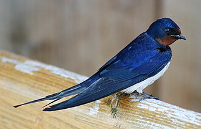
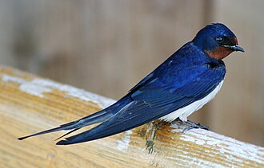
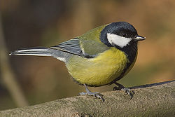
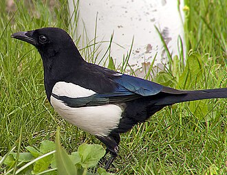

Ластівка
Перша - ластівка, швидка й спритна акробатка повітря. Вона майстерно ловить комах на льоту і завжди нагадує нам, що літо поруч.
Відкрий для себе красу пташиного світу🕊️
Україна багата не лише на зелені ліси та безкраї поля, а й на справжніх пернатих жителів, які роблять наші села й міста трішки веселішими. Вони співають ранками, кружляють у небі і іноді так сміливо підлітають до людських вікон, що можна подумати: "Хто тут насправді головний?
Серед цього пташиного різноманіття є три особливі герої, яких легко впізнати й полюбити.
Перша - ластівка, швидка й спритна акробатка повітря. Вона майстерно ловить комах на льоту і завжди нагадує нам, що літо поруч.
Друга - синичка, маленька, але неймовірно відважна пташка. Її енергія та дзвінкий спів завжди додають настрою навіть у сірий день.
І третя - сорока, хитра та кмітлива спостерігачка. Вона любить все навколо помітити й іноді навіть покопирсатися у чужих справах, але без цього пташиного "шпигунства" навряд чи було б так цікаво спостерігати за природою.
Ці три пташки - справжні символи українських садів, полів і містечок, і кожна з них додає своєї яскравої нотки у мелодію нашої природи.